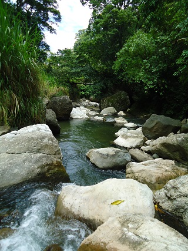
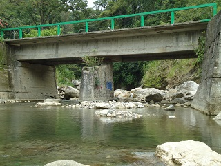
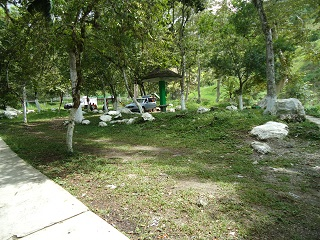
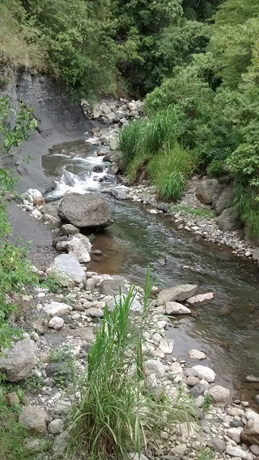
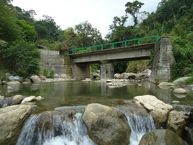

Se encuentra en las afueras de tapilula, chiapas, formado por la union de 2 afluentes de rios que provienen desde el municipio de rayon, y que atraviesan por diferentes colonia de tapilula, en lo alrededores se observa extensa vegetación y especies animales de la región.
El punto de este rio en donde se frecuenta para realizar actividades de natación, se encuentra al lado de un tramo estatal que conduce a la colonia poratacelli, municipio de tapilula, en donde están 2 puentes, el lugar está equipado con juegos infantiles, palapas y fogones para cocinar.
Se encuentra a las afueras del municipio, a 5 km de la cabecera municipal, en el tramo carretero a la colonia portacelli.
Del centro del municipio dirigirse a la secundaria federal del estado, y tomar el camino con direccion a las colonias, saliendo de la cabecera municipal y seguir 5 km el camino empedrado, pueden entrar vehiculos de todo tipo.
En el lugar usted puede practicar actividades como:
- Esparcimiento
- Vinculadas al ambiente natural
- Baños/nadar
- Fotografía
- Juegos
- Observación de flora y fauna
- Picnic
- Ríos y esteros
{kind=link}



{kind=link}

{kind=link}

{kind=link}

posicione el mouse o de click sobre las imágenes